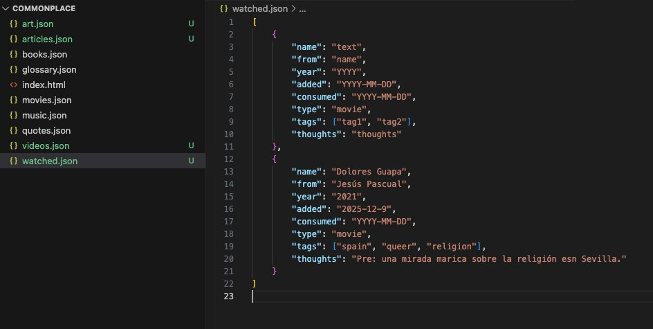
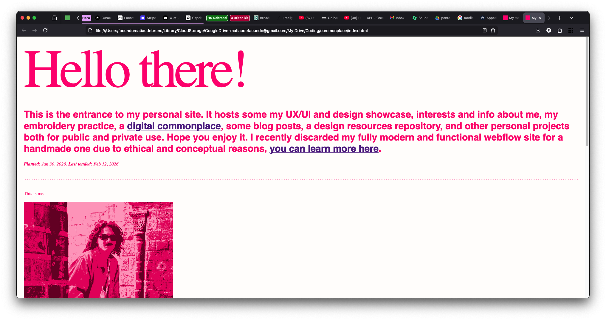
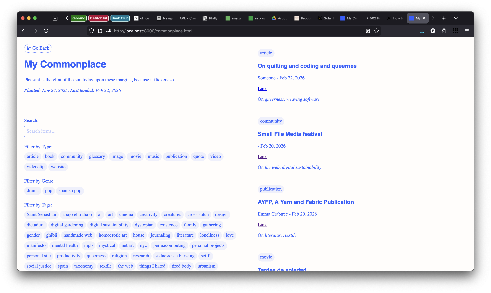
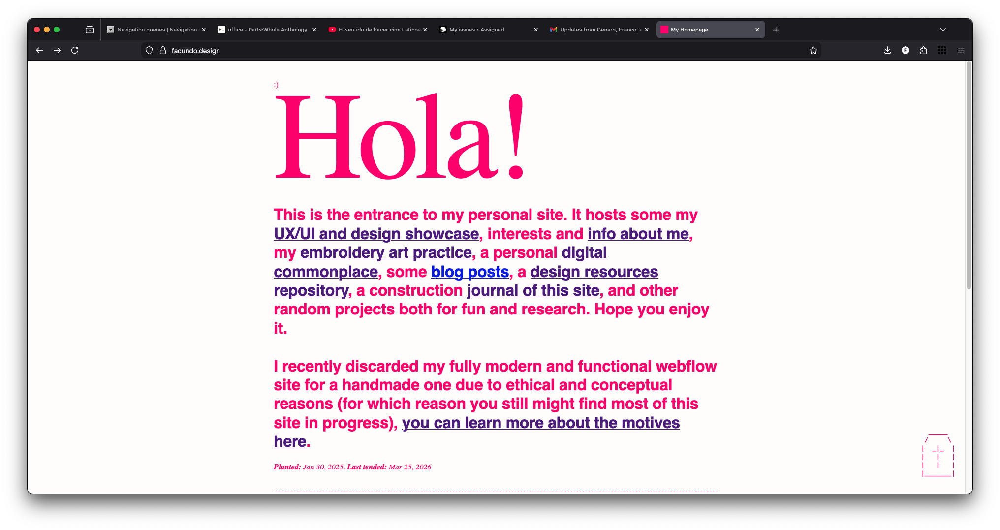

This site's
Planted: Jan 30, 2025. Last tended:
⤷
Jan 6, 2026. commonplace
This construction journal starts here because the idea did too. This has been in construction for a couple months now, but documentation of thought process starts here.
Why english? I don't really know, I guess it's gravitational force of the global north, in a way. The handmade poetic web world is mostly created in english and I want to be a part of that club too. I feel there's two things to weigh in: on one side, I have my integrity and love for the spanish language, being able to express myself with all due confidence my own language provides. On the other hand: I have the ease of use of keeping one language only, as well as being able to reach a broader audience. This commonplace is obviously not about reaching an audience, but doing so is a secondary goal. So for now, I will be contempt with just achieving the creation of this commonplace no matter the language, and try not to put too many sticks on my own wheels by just following my gut. For now, sorry to my country, my dear Spanish and Latinamerica (lol who do you think you are Facundo)
On another note, maybe, MAYBE, maybe I should just add consumed things and avoid the to watch, to read, to listen. Just actually consumed items. All in the same json. Just like a commonplace book. One file to handle all. Collected can stay separate tho, like a "notes" book
⤷
Jan 8, 2026. commonplace
Actually, this is my casita. My digital garden. In a way, a dumpster storage for my brain, so it only makes sense for it to be a bilingual spansglish enviroment just like my brain is. So, expect mostly the thoughts to be written on both languages. Soon, when this is merged to my website, spaces like design, showcase, etc will be probably in english, but the more personal ones like the commonplace be a mix of both.
⤷
Jan 8, 2026. commonplace
Been hesitant about how to manage Colledted and Consumed jsons. My gut feeling was to keep Consumed for all pieces of cultural content I have watched, read, or listened. Collected more like an are.na category where I put the quotes, the words, the pictures I collect. But after starting to fill these out with samples, I start to realize all of those things could live within one single json and just let the 'type' key be the one to really separate categories, and avoid such higher and broader Consumed and Collected umbrellas. At the end of the day, the difference between what is consumed as art and collected as "oh interesting" is very subtle and foggy. What is the difference between a meme and a painting? A book and a quote? A movie and a video interview?
Oh, the taxonomical, white and middle class struggle of it all. Tomorrow shall bring clarity to this issue.
⤷
Jan 14, 2026. commonplace
Dear diary, doubt and insecurity has gotten to me again ☹ Does it makes sense to create this beast of a site? Why not use are.na instead?
⤷
Jan 20, 2026. commonplace
Finally I decide how to split my jsons: read, for all read things such as books, articles, quotes, definitions, anything consumed primarly through reading. Watched, all that has been ingested primarly in that way, like movies, music performances, concerts, series, video essays. And listened, or hear? This one would encompass music, mostly in album format, podcasts episodes, etc.
⤷
Jan 29, 2026. commonplace
I haven't made any tweaks to the commonplace today. I just took a glimpse at the code and the site to rejoice for a minute at how it's coming together. The tag and type filters are there. Now, all that remains is to fill in the json databases for all the items I have documented in the past. My last resolution as to how to structure these databases has changed quite abruptely: for some weeks I was determined to use only one json called Collected, after trying it and feeling it was chaotic and too many objects of too many different natures were colliding in one file, I opted for separating them in the jsons mentioned in the previous entry. Part of the lesson of this project is that there's no perfect taxonomy, all that is needed is to start with something even if it doesn't feel perfectly organized. The joy of taxonomy might be something close to this discomfort, to be always improving the categories, the lists, the boxes one works with.
⤷
Jan 29, 2026. site
This is the very start of something new. On Feb 4 my Webflow plan (where I host, and have built my previous -or current?- site) will renew, so I have set feb 4 as the deadline to have this new version of my site ready. This new version is coming alive taking into account the slow and poetic pilars of the handmade web. In a bit of an anti-perfectionism challenge that the handmade movement proposes, I might launch with an unfinished state for this site. Or unpolished. Or complete, but not totally to my liking. This will be my digital garden, and all I have done for now is planted a seed, and as such, it will be a constant work in progress, moving, growing, changing, expanding, dying.
⤷
Jan 29, 2026. foundations
Just planting the seed I guess.
⤷
Jan 31, 2026. site
Woke up energized!!! Htmlized!!! Cssized!!! In a rush of saturday morning inspiration added more stuff to the homepage, created a shared css file for all pages, set up a proper hierarchy of pages -half in my head at least-, connected test pages, created color variables for each page to have its own color. The CSS stuff was a big change. I was doing styles embedded on each page but decided to create a global styles file, and just embed the styles that are only used on one page. Makes sense, at least for now when I am imagining stamdarized styles throughout pages. My previous idea was to make each page radically different but I have departed from that idea... for now.
For now I'll get out of my computer, ran out of coffee and my preferred shop for said matter closes in 30 minutes. One must now when it's the right time not to get caught up in a coding frenzy. Overall coming together and I'm happy about what has been planted and tended so far. Feb 4 as a swapping date seems feasible.
⤷
Feb 1, 2026. about
Created.
⤷
Feb 1, 2026. commonplace
All my collected items only have the tag key which is mostly about themes, but there're a lot of items, mainly books and movies, where tag can become ambigious. Should I write a genre there? Or a theme? or should I avoid genres at all? Thinking about adding two separate keys: genres and themes.
⤷
Feb 4, 2026. commonplace
Once again tempted to loose focus on my job and keep working on this commonplace. Common Facu focus. Thinking about wether to merge quotes and its read origin, or to keep separate. The latter seems better for discoverability.
⤷
Feb 11, 2026. commonplace
Getting real. This past weekend I started to migrate things scattered across platforms. Mymind, letterbox, goodreads, notion... Also, I've been trying to get into the habit of documenting stuff consumed on the day. So, I'm caught in an in between of worlds: updating new stuff as I go, but lacking a history of things consumed. I'll get there. At the same time, I've made peace with the fact that not all that has ever been consumed by me will be rescued to put into this commonplace. For the past I'll do what I can, and for the present I'll take joy in archiving everything.
⤷
Feb 12, 2026. commonplace
Found this image from Sep 12 2025 of this commonplace very early jsons "architecture". I remember at that point struggling with the idea of having one json for each type of entry. Crazy.

Now I want to start adding more screenshots, images, photos of this commonplace progress and different states, will try to do going forward. It's a pity I haven't record any of the previous states, like for example when this page used to have a baby blue background and all black serif font. Just make peace with an incomplete journal Facundo. Start recording now.
Been reading Frank Chimero's the Web's Grain, funnily enough he talks about how we are over stretching the web's material and polluting it with overtly complex spaces, and I'm here creating a journal no one will read, but just for my own, taking up space in some remote and cold server. He also talks about working with what you got, getting to know your tools, your materials, your fabrics, your threads (remember I'm an embroidery artist). I guess this journal is part of that too, conciously documenting the progress and how each element, class or property can change, my very own way of creating a personal relationship with this website, making it tangible and previous to me no more than my favorite book on my library or the plant that has been with me since I first moved out. Lowkey worrying this is some schizo behavior and I'm romanticizing the web.
⤷
Feb 12, 2026. site
Couldn't help but wonder, do I need to create one single page to combine all journals in it? The homepage + commonplace journals in one place? Probably. On the meantime, my deadline to get this whole site done moved to Mar 4... because I forgot to end my Webflow subscription and got billed. One more month I guess. Just saw Locomotive site and they have these big ass serif headings, felt inspired and added something like that to this page's hero.
Could be nice to start adding screenshots of the site progress, to show at least a tiny part of how this site has looked over time, so here we go:

A lot to go still. Need to create and copy all content from the case studies, my embroidery page, my art projects, blog, design brain food, etc. Maybe this weekend I'll migrate everything. Maybe this weekend is just another weekend where I do whatever that is at hand instead of my priorities. Or no, maybe this weekend is a procrastination and anxiety free one. Hoping for the later.
⤷
Feb 15, 2026. commonplace
"Sharing your information in a smart way can also liberate it. Why is your smartwatch writing your biological data to one silo in one format? Why is your credit card writing your financial data to a second silo in a different format? Why are your YouTube comments, Reddit posts, Facebook updates and tweets all stored in different places? Why is the default expectation that you aren't supposed to be able to look at any of this stuff? You generate all this data – your actions, your choices, your body, your preferences, your decisions. You should own it. You should be empowered by it."
This -said by Tim Berners-Lee- feels true for this commonplace. I am trying to break away from my preferences, ineterests and activity to be in different silos, and insetad create a common place for all of them. Heck of a lot of work, but maybe worth it
⤷
Feb 15, 2026. site
Should I merge this journal and the commonplace's journal into a single one journal to rule them all journal? To journal in a single place, or to journal in several dedicated places, that is the question.
⤷
Feb 20, 2026. commonplace
Added cute dividers between days, maybe I'll turn them into collapsible ones. Maybe. Also addign a screenshot here of how it used to look without them.
Today I'm thinking about how to handle images, mostly for visual art collected items, for which I haven't migrated my previous collection yet. Should I upload them in the highest quality possible? Should I use a small media approach? Will I waste more energy if I store them in high quality and load them all the time, or if I store them in a very small size way and I google higgh res version only when needed? This makes me think a lot about how to utilize the internet in a carbon foot print efficient way. Will research on this.

⤷
Mar 25, 2026. site
Long time no journal. But don't get me wrong, been working on this on and off, although this past week I've taken the last impulse to finish this and tie things up to make this site at least navigable. My mindset is to just load all the information with the current global styles and that would be it. Once I have this, I can consider the foundation done and I can start experimenting whenever I feel like it.
Yesterday I realized the site looked better if it's a thinner column centered, so now I need to apply it to the whole. It feels better. More focused, smaller, more personal, more old school, more blog like. Here's an image from today.

Oh, also, this journal! Finally merged all journals into this single one. Having separate journals for each page didn't make 100% sense, as some changes applied to a change also impact other pages. And at least for now, a single page has its own story but is also super connected to the rest.